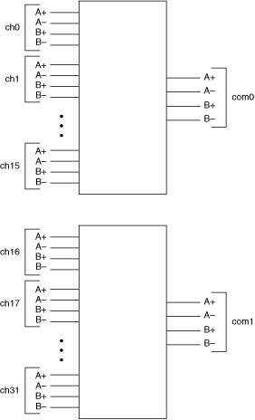

Use the NI TB-2630/2630B terminal block with the NI PXI-2530/2530B as a 4-wire dual 16×1 multiplexer. In this topology, the positive "A" leads of the first bank (CH0A+ through CH15A+) route to COM0A+. The negative "A" leads of the first bank (CH0A– through CH15B–) route to COM0A–. The positive "B" leads of the first bank (CH0B+ through CH15B+) route to COM0B+. The negative "B" leads of the first bank (CH0B– through CH15B–) route to COM0B-. COM0A+, COM0A–, COM0B+, and COM0B– are addressed collectively as com0 in software. The other bank follows a similar routing scheme.
The following figure represents the NI PXI-2530/2530B in the 4-wire dual 16×1 multiplexer topology.

Both the scanning command, ch2->com0;, and the immediate operation, niSwitch Connect Channels VI or the niSwitch_Connect function with parameters ch2 and com0, result in the following connections:
signal connected to CH2A+ is routed to COM0A+
signal connected to CH2A– is routed to COM0A–
signal connected to CH2B+ is routed to COM0B+
signal connected to CH2B– is routed to COM0B–
Refer to the NI PXI-2530 Signal Connections section for the NI PXI-2530 front connector pinout and NI TB-2630 terminal mapping. Refer to the NI PXI-2530B Signal Connections section for the NI PXI-2530B front connector pinout and NI TB-2630B terminal mapping.